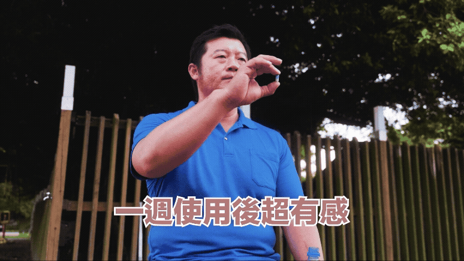
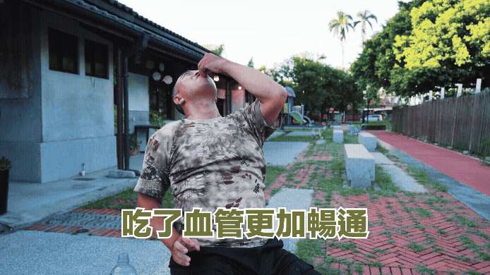

87歲阿公健檢數據嚇壞醫師？！夜裡還能連戰？鄰居都在問，他到底吃了什麼？
很多人以為，男人過了 70 歲，該退的早就退光了。
但在屏東，有一位 87 歲的阿公，徹底顛覆了所有人的想像。
他走路穩、精神好、說話中氣十足，更讓人跌破眼鏡的是：在男人最關鍵的那一塊，他從來沒有退場。
「你真的87歲？」是他最常被問的一句話
第一次見到他的人，幾乎都會露出同一個表情。
不是因為他看起來年輕，而是他的整個狀態，完全不像該出現在這個年紀的樣子。
- 走路不拖、不喘
- 腰桿挺直、眼神有神
- 說話清楚、反應很快
而跟他比較熟的朋友私下都知道，他不只白天有精神，晚上也從不缺席。
「那個阿公，不簡單。」
這句話，在地方上流傳很久了。
其實住在附近的大家，對這位阿公一點都不陌生。年輕時跑生意、顧事業、應酬多， 身邊有人半開玩笑地說過一句話：「他這輩子，少說也見過上百個女人。」
是真是假沒人敢幫他算清楚，但有一件事大家都很確定——他身邊從來不缺女伴。 從年輕到現在，幾乎沒什麼空窗期。

「百人斬」不是重點 阿公自信稱：「我不會讓自己在那一刻出包」
朋友常會笑說他是「百人斬阿公」。
但阿公自己聽了，只淡淡回一句：「我沒在求多，是求穩。」
他說，男人最怕的就是年輕時玩太兇，玩到後面身體開始落鏈。
真正讓他引以為傲的，不是經驗值，而是不論幾歲，都沒有「關鍵時刻失手」過。

不是膨風，是真的一直都很行
有人以為他是吹牛、是在別人面前逞強，但跟他相處久了才知道——那不是一時的吹噓， 而是真正長年累積下來的好狀態。
阿公自己說得很淡定：「不用去跟別人辯這個，我從年輕到現在都是做口碑的。男人拿那一兩次出來說嘴有什麼意思， 底子顧得好，這輩子都不用怕會在女伴前面漏氣。」
這句話，不少 50、60 歲的男人聽了後都沉默很久。
那次健檢，連醫生都以為看錯
前陣子做健康檢查時，醫師甚至反覆確認了年齡，才確定沒有看錯人。
因為他的精神、行動力、氣色，都不像一般高齡者。
聊到生活習慣時，醫師忍不住問：「你平常怎麼補的？」
阿公只笑笑地說：「我這一輩子，補養沒停過。不是等不行了才補，是早就知道男人最該補哪裡。」
大家真正想知道的只有一件事：他每天到底怎麼「照顧」自己？
後來在一次聚餐上，一群 60、70 歲的朋友終於忍不住聊起這話題。有人說晚上完全沒反應； 有人說腰越來越虛；有人說很久沒碰老婆了；有人自嘲「現在只剩回憶」。
阿公聽完，沉默了一會，才慢慢說：「你們其實不是不行，是你們太晚開始顧。」
他說，男人要撐到老，靠的不是刺激、不是偏方，而是長期把最容易退化的地方補回來。
不是亂吃，而是把「底氣、血流、精氣、反應」一樣一樣顧好。
這時，他才終於把自己多年來固定補養的重點，拆解給大家聽。
▼ 阿公87歲仍然有雄風的日常關鍵補養秘辛
阿公說，他這一輩子補的東西不多，但每一樣都很關鍵。
而且他不是看數字補的，是「有沒有感覺」最重要。後來才發現，很多感覺，其實都有研究支持。
✦ 六年鱉精
在熟齡男性圈中，鱉被視為「下盤的根本」。傳統觀點中，常被用來補虛勞、養精氣、強腰力。
而且一定要特別挑台灣養殖的六年生甲魚，把營養價值拉到最高，雖然成本高，但也真的特別補。
研究顯示，甲魚精華裡的胜肽成分可以讓有氧運動的耐受時間延長 35.4%~57.1%。
不少熟齡男性試了之後都說：「六年的真的有差」、「好久沒這種感覺了」、「下盤更穩了」、「走路、久站都比較有力」、「晚上狀態更持久了」……。
阿公說得很直接：「這個沒顧好，後面再補都很難。」
✦ 祕魯黑瑪卡
對很多男人來說，年紀大了，不是膩了或不想，而是沒勁。
祕魯的黑瑪卡是瑪卡中營養價值最高的種類，常被討論與體力、耐力、慾望回溫有關。
研究指出，連續補充到第 12 週的時候，男性的性慾顯著增加 40%，具輕度勃起功能障礙男性的勃起功能也明顯改善。
阿公笑說：「就是因為我從很早就開始補，所以那股想要的感覺，我一直都在，沒有斷過。」
✦ 左旋精胺酸
熟齡男性最怕的就是「反應慢、硬度不穩」。
精胺酸是男性保健中很重要的一個配方成分，常被提及與血流順暢、反應速度有關，讓關鍵時刻不再拖泥帶水。
甚至有研究發現，連續 3 個月補充精胺酸，可以改善輕中度血管性勃起功能障礙者的勃起功能和陰莖海綿體血流峰值速度， 甚至可能可以作為一種替代治療的方式。
✦ 紐西蘭蠔精
蠔精提供了多種胺基酸與微量元素，其中含有大量的鋅，而鋅正是男性維持正常機能不可或缺的重要礦物質。
不少熟齡男性補充後反映：
- 精神變好
- 體力回穩
- 整體狀態不再空虛
✦ 透納葉 + 管花肉蓯蓉
這是阿公最常提到的「反應組」，也是不容小覷的植物萃取精華，深入內層，提供紮紮實實的營養支援。
- 透納葉：風靡歐美的「愛情魔幻劑」，傳統上常與情慾、反應速度連結；常被用於調節雄性激素和雌性激素的平衡。經實測發現補充四週後，親密關係的滿意程度提升 92%。
- 管花肉蓯蓉：在補養概念中，常用來補腎、顧下盤、養精氣，是熟齡男腰、腿、膝的神隊友。
這兩個配方組合在一起的重點只有一個：讓熟齡男人不只是想，而是真的做得到，找回戰力與自信。
✦ 韓國專利紅蔘 + 紅蚯蚓酵素
這一組，顧的是整體循環與動力。
- 韓國專利紅蔘：含有 30 種人蔘皂苷，吸收力比白蔘更好，有高達 154% 的吸收率、2 倍吸收速度，經常被用於補氣、抗疲勞。
- 紅蚯蚓酵素：透過日本專利製程萃取的話題成分，保留完整活性和極高的穩定性，常被用在循環、代謝、流動性相關保健。
阿公形容得很簡單：「血有在跑，人就不會軟。」
為什麼87歲還能這樣？
答案其實很現實：多數男人常常忙到忽略自己，等到不行才想補。真的要補的時候，又補不對方向。
而這位阿公，一輩子都在顧「男人最不能垮的地方」。

如果你現在已經開始覺得不如從前
不論你是 50、60、70 歲，開始出現：
- 晚上越來越被動
- 清晨反應變慢
- 腰力、體力明顯下滑
- 在另一半面前失去信心
那你該問的不是：「我是不是老了？」，而是「我還有沒有給自己重新站起來的機會？」
阿公最後講了一句話，幫每個男人都打了一劑強心針：「男人，只要還想要，就還有救。」

這件事，信不信在你
你不需要成為傳說，只需要不要一年比一年退。
所以，你只需要想一件事：「我現在的狀態，是不是一年比一年差？」
如果答案是「有一點」，那代表你其實也已經感覺到了。
留言區
匿名
到這個年紀，大家都馬剩一張嘴，還可以就已經很厲害了
陳先生
有些話寫得蠻直接的，但也算實在
早一點看到的話，我可能會少走一些彎路
王先生
其實很多人都只是在騙自己！本來只是想隨便看看，結果一不小心就看完了
張先生 ｜61 歲｜退休後偶爾運動
以前不會特別去想這些，現在真的有感覺精神跟體力有差